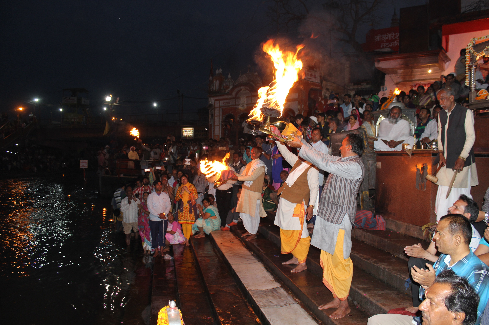

Spiritual Highlights

🕉️ Sangam Snan

🔥 Ganga Aarti

🧘 Saints & Sadhus
महाकुंभ मेला विश्व का सबसे बड़ा धार्मिक और सांस्कृतिक आयोजन है। यह भारत में चार स्थानों पर आयोजित किया जाता है – प्रयागराज (इलाहाबाद), हरिद्वार, उज्जैन और नासिक। महाकुंभ का आयोजन प्रत्येक 12 वर्षों में एक बार होता है, जबकि 6 वर्षों में होने वाले आयोजन को अर्धकुंभ कहा जाता है।
महाकुंभ का महत्व
आध्यात्मिक महत्ता: ऐसा माना जाता है कि महाकुंभ स्नान से जन्म-जन्मांतर के पाप नष्ट हो जाते हैं और मोक्ष की प्राप्ति होती है।
खगोलीय आधार: इसका समय और स्थान ग्रह-नक्षत्रों की स्थिति के अनुसार तय किया जाता है।
धार्मिक संगम: यह वह अवसर है जब लाखों-करोड़ों श्रद्धालु, साधु-संत, अखाड़े और महात्मा एक साथ संगम पर स्नान और साधना करते हैं।
प्रमुख विशेषताएँ
संगम स्नान – प्रयागराज में गंगा, यमुना और अदृश्य सरस्वती के संगम पर स्नान का विशेष महत्व है।
साधु-संतों का जमावड़ा – नागा साधु, अखाड़े और विभिन्न धार्मिक परंपराओं के संत यहाँ एकत्र होते हैं।
सांस्कृतिक धरोहर – यह केवल धार्मिक आयोजन नहीं है बल्कि भारत की सांस्कृतिक, आध्यात्मिक और सामाजिक विविधता का प्रतीक है।
ऐतिहासिक पृष्ठभूमि
पौराणिक कथा के अनुसार, समुद्र मंथन के समय अमृत कलश के लिए देवताओं और असुरों के बीच संघर्ष हुआ था। अमृत की बूंदें चार स्थानों पर गिरीं – प्रयागराज, हरिद्वार, उज्जैन और नासिक। इन्हीं स्थानों पर महाकुंभ आयोजित किया जाता है।
👉 महाकुंभ न केवल धार्मिक आस्था का पर्व है, बल्कि यह भारत की एकता, सांस्कृतिक विरासत और आस्था की शक्ति का जीवंत प्रमाण है।